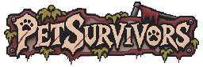

Factory
Abierto/cerrado: una especie o un enemigo nuevo no cambia al cliente.
Inversión de dependencias: el catálogo depende de FabricaMascotas, no de Gato.
UNSA · Tecnología de Objetos · Exposición

Patrones de diseño en nuestro proyecto: Factory, Observer y Command, con sus patrones afines.
Punto de partida
No los usamos por usarlos: cada uno aparece donde el código iba a cambiar o a acoplarse demasiado.
| Problema en el juego | Patrón | Tipo (GoF) | Dónde |
|---|---|---|---|
| Crear un gato o un perro según el texto del JSON | Factory | Creacional | FabricaMascotasBase |
| Crear el enemigo correcto en cada oleada | Factory | Creacional | FabricaEnemigosBase |
| Avisar a la vista sin que la misión la conozca | Observer | Comportamiento | ReceptorEventosMision |
| Que botones, teclas y menú hagan la misma acción | Command | Comportamiento | Comando, AccionesControlador |
| Que cada enemigo se mueva y ataque distinto | Strategy | Comportamiento | EstrategiaEnemigo |
| Separar reglas, coordinación y dibujo | MVC | Arquitectónico | Modelo, Controlador, Vista |
Factory · Creacional
La ficha JSON dice "especie": "gato". Sin un patrón, cada lugar que crea mascotas repetiría este if:
// ✗ Sin Factory: el cliente conoce todas las clases concretas if (ficha.especie == "gato") mascota = new Gato(ficha); else if (ficha.especie == "perro") mascota = new Perro(ficha); // ¿Y un loro? Hay que buscar y cambiar cada if.
Encapsular la creación de objetos detrás de una interfaz, para que el resto del código pida “una mascota” sin saber qué clase concreta recibe.
Gato y Perro.Mascota (polimorfismo).Factory · Estructura
classDiagram
direction TB
class FabricaMascotas {
<<interface>>
+crear(ficha) unique_ptr~Mascota~
}
class FabricaMascotasBase {
+crear(ficha) unique_ptr~Mascota~
}
class Mascota {
<<abstract>>
+calcularEdadHumana()* double
}
class Gato {
+calcularEdadHumana() double
}
class Perro {
+calcularEdadHumana() double
}
class CatalogoCasosJson {
-fabrica_: const FabricaMascotas&
}
FabricaMascotas <|.. FabricaMascotasBase
Mascota <|-- Gato
Mascota <|-- Perro
FabricaMascotasBase ..> Gato : crea
FabricaMascotasBase ..> Perro : crea
CatalogoCasosJson o-- FabricaMascotas : usa
| Creador | FabricaMascotas |
| Creador concreto | FabricaMascotasBase |
| Producto | Mascota |
| Productos concretos | Gato, Perro |
| Cliente | CatalogoCasosJson, controlador |
El catálogo recibe la fábrica por el constructor (inyección de dependencias): en las pruebas se le puede pasar otra.
Factory · Código del proyecto
mascota/fabrica_mascotas_base.cpp
std::unique_ptr<Mascota> FabricaMascotasBase::crear(const FichaMascota& ficha) const { if (ficha.especie == "gato") { return std::make_unique<Gato>(ficha); } if (ficha.especie == "perro") { return std::make_unique<Perro>(ficha); } return nullptr; // especie no admitida }
uso desde el cliente
const FabricaMascotasBase fabrica; std::unique_ptr<Mascota> mascota = fabrica.crear(caso.mascota); // Polimorfismo: se llama a la versión de Gato o de Perro double edad = mascota->calcularEdadHumana(); // Mora (gata, 24 meses) → 24 · Toby (perro, 48 meses) → 34
std::unique_ptr: la fábrica entrega la propiedad; no hay delete manual.nullptr permite que el catálogo informe mascota.especie: especie no admitida.Factory + Strategy
enemigo/fabrica_enemigos_base.cpp
std::unique_ptr<Enemigo> FabricaEnemigosBase::crear(const Aparicion& aparicion) const { const PerfilEnemigo valores = perfil(aparicion.tipo); const EstadoEnemigo estado{aparicion.tipo, aparicion.posicion, valores.vida, valores.velocidad, valores.danio, ...}; return std::make_unique<EnemigoConEstrategia>( estado, crear_estrategia(aparicion.tipo)); }
| Tipo | Perfil | Estrategia |
|---|---|---|
| Animal de contacto | 30 vida · rápido | PerseguirPorContacto |
| Superviviente de contacto | 60 vida · lento | PerseguirPorContacto |
| Superviviente a distancia | 40 vida · dispara | AtacarADistancia |
El combate solo pide fabrica_->crear(aparicion). Un enemigo nuevo es una fila en la fábrica y, si se mueve distinto, una nueva estrategia.
Factory · Patrones afines
| Patrón | Idea | En nuestro proyecto |
|---|---|---|
| Simple Factory | Una función decide qué clase crear | crear_estrategia(tipo) dentro de la fábrica de enemigos |
| Factory Method | Una interfaz con un método crear() que cada subclase implementa | usado FabricaMascotas y FabricaEnemigos con sus versiones Base |
| Abstract Factory | Crea familias de objetos relacionados | Sería útil si cada especie trajera mascota + sprite + sonido juntos |
| Builder | Construye un objeto complejo paso a paso | No hizo falta: el JSON ya trae la ficha completa |
| Prototype | Crea copiando un objeto modelo | No hizo falta: los enemigos se crean desde su perfil |
| Singleton | Una sola instancia global | Lo evitamos: las fábricas se inyectan, así se pueden reemplazar en pruebas |
Observer · Comportamiento
Al recoger  un suministro hay que reproducir un sonido, y al terminar el intento, iniciar el fundido. Si
un suministro hay que reproducir un sonido, y al terminar el intento, iniciar el fundido. Si MisionBase llamara directamente a la vista:
Definir una dependencia uno a muchos: cuando el sujeto cambia, avisa a todos sus observadores, sin conocer su clase concreta.
| Sujeto | Mision / MisionBase |
| Observador | ReceptorEventosMision |
| Observadores concretos | ReceptorGrabador (pruebas) y la vista con sonido (rol 5) |
| Eventos | suministro_recogido, intento_finalizado |
Observer · Estructura y código
classDiagram
direction TB
class Mision {
<<interface>>
+suscribir(receptor)
+desuscribir(receptor)
}
class MisionBase {
-receptores_: vector~ReceptorEventosMision*~
-recolectar()
-finalizar(desenlace)
}
class ReceptorEventosMision {
<<interface>>
+suministro_recogido(suministro)
+intento_finalizado(desenlace)
}
class ReceptorGrabador {
+suministro_recogido(suministro)
+intento_finalizado(desenlace)
}
class VistaConSonido {
<<rol 5>>
}
Mision <|.. MisionBase
ReceptorEventosMision <|.. ReceptorGrabador
ReceptorEventosMision <|.. VistaConSonido
MisionBase o-- "0..*" ReceptorEventosMision : notifica
mision/mision_base.cpp
void MisionBase::suscribir(ReceptorEventosMision& receptor) { // Sin duplicados: cada receptor recibe un aviso if (std::find(receptores_.begin(), receptores_.end(), &receptor) == receptores_.end()) { receptores_.push_back(&receptor); } } // Primero se actualiza el inventario; después se avisa. const std::vector<ReceptorEventosMision*> copia = receptores_; for (ReceptorEventosMision* receptor : copia) { receptor->suministro_recogido(tomado); }
Se recorre una copia de la lista: un receptor puede desuscribirse durante el aviso sin invalidar el bucle. Las pruebas de la misión suscriben dos veces el mismo receptor y comprueban que recibe un solo aviso.
Observer · Diagrama de secuencia
sequenceDiagram autonumber participant C as Controlador participant M as MisionBase participant V as Vista (receptor) participant L as Otro receptor Note over C,V: Al integrar, la vista se suscribe C->>M: suscribir(vista) C->>M: actualizar(direccion, segundos) M->>M: recolectar(): actualiza inventario y terreno M->>V: suministro_recogido(suero) M->>L: suministro_recogido(suero) V->>V: reproduce sonido M->>M: objetivo cubierto M->>V: intento_finalizado(completada) M->>L: intento_finalizado(completada) C->>M: extraer_resultado() M-->>C: ResultadoMision (una sola vez)
Observer · Variantes y patrones afines
Push (el nuestro): el aviso ya trae el dato, como el suministro o el desenlace. Pull: solo avisa “algo cambió” y el observador consulta estado().
Usamos push para los eventos y pull para dibujar cada cuadro: la vista pide estado_pantalla().
desuscribir() existe para que un receptor destruido no reciba avisos (evita punteros colgantes).suministro_recogido y luego intento_finalizado.Command · Comportamiento
“Examinar mascota” se puede pedir con un clic en el botón, con una tecla o desde un menú. “Reintentar” aparece en la clínica y tras un fallo.
Convertir una petición en un objeto. Así se puede pasar, guardar, poner en cola o deshacer, y el que la emite no conoce a quien la ejecuta.
| Comando | Comando::ejecutar(receptor) |
| Receptor | AccionesControlador |
| Invocador | Controlador::actualizar() |
| Cliente | La vista: traduce la entrada a una Accion |
Command · Estructura y código
classDiagram
direction TB
class Comando {
<<interface>>
+ejecutar(receptor: AccionesControlador) const
}
class ComandoExaminar {
+ejecutar(receptor) const
}
class ComandoReintentar {
+ejecutar(receptor) const
}
class AccionesControlador {
<<interface>>
+examinar_mascota()
+aceptar_caso()
+rechazar_caso()
+reintentar_mision()
+avanzar_dialogo()
+alternar_menu()
}
class Controlador {
<<interface>>
+actualizar(entrada, segundos)
}
Comando <|.. ComandoExaminar
Comando <|.. ComandoReintentar
AccionesControlador <|-- Controlador
Comando ..> AccionesControlador : ejecuta
controlador/comando.h (contrato del proyecto)
class Comando { public: virtual ~Comando(); virtual void ejecutar(AccionesControlador& receptor) const = 0; };
comando concreto (forma de implementarlo)
class ComandoExaminar final : public Comando { public: void ejecutar(AccionesControlador& receptor) const override { receptor.examinar_mascota(); } };
Los contratos Comando y AccionesControlador ya están en el repositorio; los comandos concretos los integra el rol 5.
Command · De la entrada a la acción
sequenceDiagram autonumber actor J as Jugador participant V as Vista participant C as Controlador (invocador) participant K as ComandoExaminar participant A as AccionesControlador (receptor) participant S as Consultorio J->>V: clic en "Examinar mascota" V->>V: ¿Accion::examinar está en acciones_disponibles? V->>C: actualizar(EntradaCuadro con Accion::examinar) C->>K: ejecutar(*this) K->>A: examinar_mascota() A->>S: consulta la ficha pendiente C-->>V: estado_pantalla() con la ficha abierta
La vista solo ofrece las acciones de EstadoPantalla::acciones_disponibles: con el menú de pausa abierto, el controlador simplemente no las publica.
Command · Patrones afines
enemigo/perseguir_por_contacto.cpp (Strategy)
IntencionEnemigo PerseguirPorContacto::decidir(
const EstadoEnemigo& enemigo, Punto jugador, float) {
return {direccion_hacia(enemigo.posicion, jugador),
AtaqueEnemigo::contacto};
}
| Command | Strategy | |
|---|---|---|
| Encapsula | qué hacer (una petición) | cómo hacerlo (un algoritmo) |
| Se elige | en cada entrada | al crear el enemigo |
| En el juego | examinar, aceptar… | perseguir, disparar |
CombateBase::actualizar() sigue siempre los mismos pasos.Integración
sequenceDiagram autonumber participant V as Vista participant C as Controlador participant M as MisionBase participant K as CombateBase participant F as FabricaEnemigos participant E as Estrategia V->>C: Command: entrada con dirección o acción C->>M: actualizar(direccion, segundos) M->>K: agregar_enemigo(aparicion) K->>F: Factory: crear(aparicion) F-->>K: unique_ptr de Enemigo con su estrategia K->>E: Strategy: decidir(jugador, segundos) E-->>K: dirección y ataque M-->>V: Observer: suministro_recogido(...) C-->>V: MVC: estado_pantalla() para dibujar
Conclusiones
Abierto/cerrado: una especie o un enemigo nuevo no cambia al cliente.
Inversión de dependencias: el catálogo depende de FabricaMascotas, no de Gato.
Bajo acoplamiento: el modelo no conoce raylib.
Verificabilidad: en las pruebas, ReceptorGrabador registra cada aviso y comprueba su orden.
Responsabilidad única: la vista captura, el controlador decide.
Extensible: deshacer, atajos o repetición se agregan sin tocar la vista.
MisionBase y probado con ReceptorGrabador, en revisión en el PR #5. La vista se suscribirá al integrar el sonido.Gracias
Factory crea, Strategy decide cómo actuar, Command transporta lo que pide el jugador y Observer avisa lo que pasó.